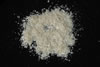

|
|
(For further information on spectroscopy, see:
http://speclab.cr.usgs.gov)
TITLE: Paragonite GDS109 DESCRIPT
DOCUMENTATION_FORMAT: MINERAL
SAMPLE_ID: GDS109
MINERAL_TYPE: Phyllosilicate
MINERAL: Paragonite (Mica group)
FORMULA: NaAl2(Si3Al)O10(OH)2
FORMULA_HTML: NaAl2(Si3Al)O10(OH)2
COLLECTION_LOCALITY: Ilas de Margarita, Venezuela
ORIGINAL_DONOR: Jim Crowley, USGS Reston
CURRENT_SAMPLE_LOCATION: USGS Denver Spectroscopy Laboratory
ULTIMATE_SAMPLE_LOCATION: USGS Denver Spectroscopy Laboratory
SAMPLE_DESCRIPTION:
see:
Robie, R.A., and B.S. Hemingway, 1984, Heat capacities and entropies of phlogopite and paragonite between 5 and 900 K and estimates of the enthalpies and Gibbs free energies of formation. American Mineralogist, v.69, pp. 858-868.
IMAGE_OF_SAMPLE:

END_SAMPLE_DESCRIPTION.
XRD_ANALYSIS:
40 kV - 30 mA, 6.5-9.5 keV (smear mount of GDS109 = parag.out;
smear mount of GDS109 ground with glass = parag2.out)
References: Bailey (1988, p. 201); calculated 2M1 paragonite
pattern of Borg and Smith (1969); Huebner's reference
patterns
Found: dioctahedral mica
Sought but not found: quartz, muscovite, chlorite
Comments: Many expected reflections were not resolved, even
following grinding with glass; non-basal reflections
are broad. The position of the (004) reflection
indicates the presence of a small cation such as sodium.
The polytype could not be determined. Even allowing for
preferred basal orientation, GDS109 is poorly
crystallized. It is not of the same quality as the
"muscovites" and probably should not be compared with
them to attempt to ascertain K/Na from spectra. However,
poorly crystallized material such as GDS109 may be more
representative of micas in sedimentary environments than
is the suite of "muscovites".
J.S. Huebner, J. Pickrell, and T. Schaefer, 1994, written communication.
"Unit cell parameters are a = 0.5130±0.0010 nm, b = 0.8905±0.0017 nm, c = 1.9342±:0.0039 nm, and beta = 94.50.2° and the structure type is 2M1 (M.R. Ross, written communication, August 1982). These parameters are in good agreement with those reported by Chatterjee (1974) and Holland (1979) for synthetic 2M1 paragonite." Robie, R.A., and B.S. Hemingway, 1984, Heat capacities and entropies of phlogopite and paragonite between 5 and 900 K and estimates of the enthalpies and Gibbs free energies of formation. American Mineralogist, v.69, pp. 858-868.
END_XRD_ANALYSIS.
COMPOSITIONAL_ANALYSIS_TYPE: see discussion # XRF, EM(WDS), ICP(Trace), WChem
| COMPOSITION KEYWORD |
Oxide ASCII |
Amount | Weight Percent, % |
Oxide html |
|---|---|---|---|---|
| COMPOSITION: | SiO2 | 46.70 | wt% | SiO2 |
| COMPOSITION: | TiO2 | 0.46 | wt% | TiO2 |
| COMPOSITION: | Al2O3 | 40.50 | wt% | Al2O3 |
| COMPOSITION: | FeO | 0.32 | wt% | FeO |
| COMPOSITION: | CaO | 0.40 | wt% | CaO |
| COMPOSITION: | Na2O | 6.90 | wt% | Na2O |
| COMPOSITION: | K2O | 0.73 | wt% | K2O |
| COMPOSITION: | H2O+ | 5.20 | wt% | H2O+ |
| COMPOSITION: | Total | 101.21 | wt% |
COMPOSITION_TRACE:
COMPOSITION_DISCUSSION:
Composition information from:
Robie, R.A., and B.S. Hemingway, 1984, Heat capacities and entropies of phlogopite and paragonite between 5 and 900 K and estimates of the enthalpies and Gibbs free energies of formation. American Mineralogist, v.69, pp. 858-868. (J. Marinenko, analyst. Rapid-rock method.)
END_COMPOSITION_DISCUSSION.
MICROSCOPIC_EXAMINATION:
END_MICROSCOPIC_EXAMINATION.
SPECTROSCOPIC_DISCUSSION:
END_SPECTROSCOPIC_DISCUSSION.
SPECTRAL_PURITY: 1a2_3_4_ # 1= 0.2-3, 2= 1.5-6, 3= 6-25, 4= 20-150 microns
| LIB_SPECTRA_HED: | where | Wave Range | Av_Rs_Pwr | Comment |
|---|---|---|---|---|
| LIB_SPECTRA: | splib04a r 3820 | 0.2-3.0µm | 200 | g.s.= |
| LIB_SPECTRA: | splib05a r 5340 | 0.2-3.0µm | 200 | g.s.= |
| LIB_SPECTRA: | splib06a r 17429 | g.s.= |
{kind=link}